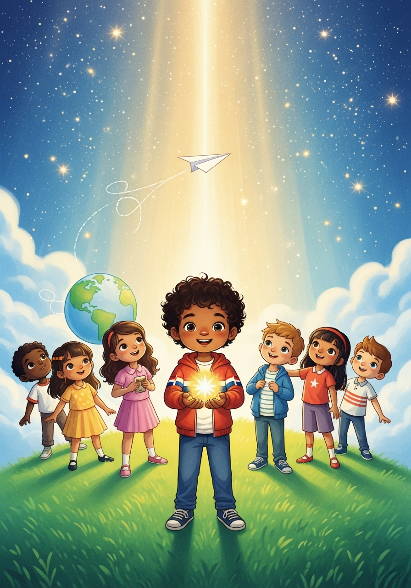

Twelve true stories about kids who did impossible things — and the one secret they all share.
Start ReadingI'm going to be blunt with you. The craziest idea in the world is that any child — any kid, anywhere, no matter how small, how young, how invisible they feel — has the power to change the world.
Most adults don't actually believe it. They say "be realistic." They say "you're too young." But I believe it. And I'm not going to just ask you to take my word for it. I'm going to prove it.
Here are thirteen true stories. Thirteen kids who did something the world said was impossible. By the time you finish, I think you'll look in the mirror and whisper: What if I change the world? What if my idea is not that crazy?
Now you know. The craziest idea in the world is this:
They didn't have superpowers. They didn't have magic. They had something better. They had TIME. You have more of it than anyone.
The world is changed by people who see something and decide this matters more than my fear.
Download the beautifully illustrated book as a PDF.
Armando Diaz Silverio wrote these stories because he believes every kid deserves to know the craziest idea in the world — before anyone tells them it's impossible.